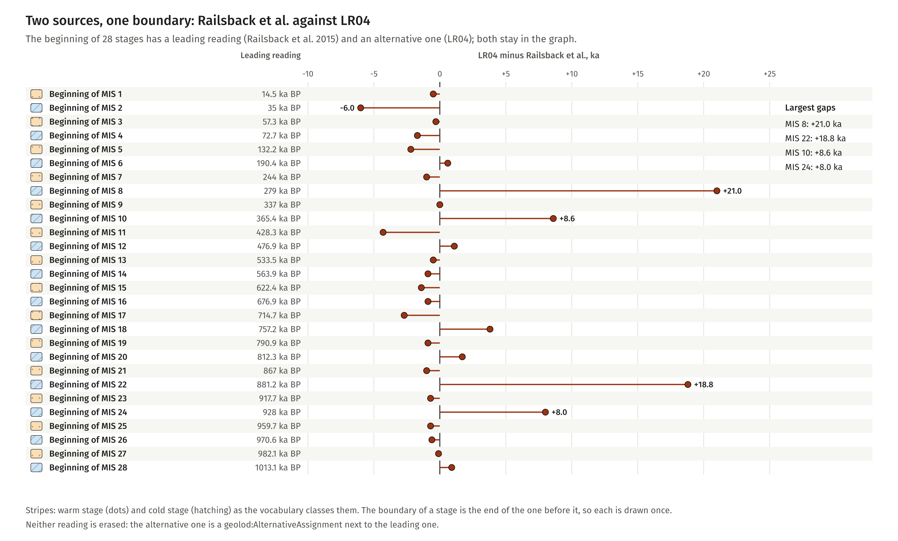
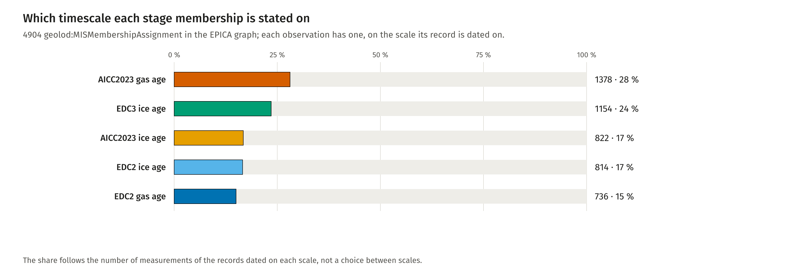

PREFIX geolod: <http://w3id.org/geo-lod/>
PREFIX strat: <http://w3id.org/geo-lod/strat/>
PREFIX sisal: <http://w3id.org/geo-lod/sisal/>
PREFIX crm: <http://www.cidoc-crm.org/cidoc-crm/>
PREFIX dct: <http://purl.org/dc/terms/>
PREFIX prov: <http://www.w3.org/ns/prov#>
PREFIX skos: <http://www.w3.org/2004/02/skos/core#>
PREFIX time: <http://www.w3.org/2006/time#>
# The beginning of each stage as a depth, one row per timescale.
# Runs on ontology/vocab/mis.ttl and EPICA/rdf/epica_dome_c.ttl together.
SELECT ?stage ?scale ?depth_m ?age_ka WHERE {
?a a geolod:MISAttributeAssignment ;
crm:P177_assigned_property_of_type geolod:MISBoundaryDepth ;
crm:P140_assigned_attribute_to ?stage ;
geolod:inChronology ?scale ;
crm:P141_assigned/geolod:atDepth_m ?depth_m ;
prov:wasDerivedFrom/geolod:ageKaBP ?age_ka .
} ORDER BY ?stage ?scale
Run on the two graphs together and compared with the figure: 77 rows, 19 boundaries. The widest spread is the beginning of MIS 4: 69 m between the scales.

The beginning of 28 stages in two sources
Fiona Schenk, Florian Thiery, Research Squirrel Engineers at LEIZA. CC BY 4.0.
PREFIX geolod: <http://w3id.org/geo-lod/>
PREFIX strat: <http://w3id.org/geo-lod/strat/>
PREFIX sisal: <http://w3id.org/geo-lod/sisal/>
PREFIX crm: <http://www.cidoc-crm.org/cidoc-crm/>
PREFIX dct: <http://purl.org/dc/terms/>
PREFIX prov: <http://www.w3.org/ns/prov#>
PREFIX skos: <http://www.w3.org/2004/02/skos/core#>
PREFIX time: <http://www.w3.org/2006/time#>
# The beginning of a stage, as each source dates it, for the stages that have an alternative reading.
SELECT ?stage ?source ?status ?age_ka WHERE {
?a a geolod:MISAttributeAssignment ;
crm:P177_assigned_property_of_type geolod:PeriodBeginning ;
crm:P140_assigned_attribute_to ?stage ;
crm:P141_assigned/time:numericPosition ?age_ka ;
dct:source ?source ;
geolod:assignmentStatus ?status .
?stage a geolod:MarineIsotopeStage .
FILTER EXISTS {
?b a geolod:MISAttributeAssignment ;
crm:P177_assigned_property_of_type geolod:PeriodBeginning ;
crm:P140_assigned_attribute_to ?stage ;
geolod:assignmentStatus geolod:AlternativeAssignment .
}
} ORDER BY ?stage ?status
Run on ontology/vocab/mis.ttl and compared with the figure: 56 rows, two per stage. 15 of 28 boundaries differ by at most one ka; the largest gaps are MIS 8 (+21.0 ka), MIS 22 (+18.8 ka), MIS 10 (+8.6 ka), MIS 24 (+8.0 ka).

Stage memberships per timescale
Fiona Schenk, Florian Thiery, Research Squirrel Engineers at LEIZA. CC BY 4.0.
PREFIX geolod: <http://w3id.org/geo-lod/>
PREFIX strat: <http://w3id.org/geo-lod/strat/>
PREFIX sisal: <http://w3id.org/geo-lod/sisal/>
PREFIX crm: <http://www.cidoc-crm.org/cidoc-crm/>
PREFIX dct: <http://purl.org/dc/terms/>
PREFIX prov: <http://www.w3.org/ns/prov#>
PREFIX skos: <http://www.w3.org/2004/02/skos/core#>
PREFIX time: <http://www.w3.org/2006/time#>
SELECT ?scale (COUNT(?a) AS ?n) WHERE {
?a a geolod:MISMembershipAssignment ;
geolod:inChronology ?scale .
} GROUP BY ?scale ORDER BY DESC(?n)
Run on epica_dome_c.ttl and compared with the figure: 4904 memberships. The second query (observations with more than one membership) returns no row; the build stops if it does.
SPARQL
PREFIX geolod: <http://w3id.org/geo-lod/>
PREFIX strat: <http://w3id.org/geo-lod/strat/>
PREFIX sisal: <http://w3id.org/geo-lod/sisal/>
PREFIX crm: <http://www.cidoc-crm.org/cidoc-crm/>
PREFIX dct: <http://purl.org/dc/terms/>
PREFIX prov: <http://www.w3.org/ns/prov#>
PREFIX skos: <http://www.w3.org/2004/02/skos/core#>
PREFIX time: <http://www.w3.org/2006/time#>
# Observations with more than one stage membership. Expected: no row.
SELECT ?obs (COUNT(?a) AS ?n) WHERE {
?a a geolod:MISMembershipAssignment ;
crm:P140_assigned_attribute_to ?obs .
} GROUP BY ?obs HAVING (COUNT(?a) > 1)
Classes
Class
Label
Comment
CRM anchor
geolod:AssignedPropertyType
Assigned Property Type
The kind of property an attribute assignment establishes (crm:P177).
crm:E55_Type
geolod:AssignmentStatus
Assignment Status
States whether an attribute assignment is the one geo-lod follows, or a competing reading kept alongside it. Competing readings are never dropped; this only records which one leads.
crm:E55_Type
geolod:ClimateMode
Climate Mode
Classifies a Marine Isotope Stage as warm or cold.
crm:E55_Type
geolod:MISAttributeAssignment
MIS Attribute Assignment
Assigns a boundary age, an excursion peak or a climate mode to a Marine Isotope Stage on the authority of one source. Competing readings of the same boundary are kept as separate assignments rather than harmonised.
crm:E13_Attribute_Assignment
geolod:MISMembershipAssignment
MIS Membership Assignment
Places an observation in a Marine Isotope Stage, on the authority of one boundary source and through one chronology. Deliberately not a subclass of geolod:MISAttributeAssignment: that one assigns properties *to* a stage, this one assigns a stage *to* something else, and the two carry different constraints.
crm:E13_Attribute_Assignment
geolod:MarineIsotopeStage
Marine Isotope Stage
A stage of the marine oxygen-isotope record, used as a chronostratigraphic subdivision of the Quaternary and late Neogene.
crm:E4_Period
geolod:MarineIsotopeSubstage
Marine Isotope Substage
A lettered subdivision of a Marine Isotope Stage after Railsback et al. (2015). Substages label excursions rather than the transitions between them, so their boundaries are gradational.